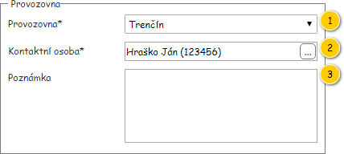
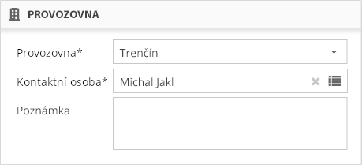

Stručný popis
Část formuláře objednávky – Provozovna (viz ).
Uživatelské rozhraní
Drátový diagram

Přehled UI komponent
| Callout | Komponenta | Nadpis | Typ komponenty | Příklad hodnoty | Hodnota | Výchozí hodnota | Formát | Zpřístupněná | Viditelná | Chování | Validace | Poznámka |
|---|
| 1 | Provozovna | Provozovna* | ComboBox | Trenčín | Entita Provozovna – atribut Provozovna entity Objednávka. Závisí na stavu objednávky – viz Dostupné provozovny. | Provozovny dostupné přihlášenému uživateli. |
| Dle atributu Stav entity Objednávka: - Ano: Žádný stav, Rozpracovaná, K upřesnění.
- Ne: jinak.
| Vždy | V případě, že je obsažena pouze jedna Provozovna, chová se komponenta jako TextBox v režimu pro čtení. | – | Typicky je dostupná pouze jedna provozovna. |
| 2 | Zpracoval | Zpracoval | TextBox | Ján Hraško (123456) | Entita Zaměstnanec – atribut Zaměstnanec entity Uživatel – atribut Vytvořil entity Objednávka. Pokud není instance entity Zaměstnanec k dispozici, není hodnota zobrazena. Ve chvíli, kdy je editována Objednávka, je načtena uložená hodnota – tedy Zaměstnanec odpovídající Uživateli, který Objednávku vytvořil. | Entita Zaměstnanec – atribut Zaměstnanec entity Uživatel, který je právě přihlášen v aplikaci. Pokud není instance entity Zaměstnanec k dispozici, není hodnota zobrazena. Ve chvíli, kdy je vytvořena Objednávka, je načtena výchozí hodnota – tedy Zaměstnanec odpovídající právě přihlášenému Uživateli. | () Pokud není dostupné Osobní číslo: | Nikdy | Vždy | – Viz Výběr kontaktní osoby v modálním okně . | – | – |
| 3 | Poznámka | Poznámka | MultilineTextBox | Záloha bude dodána do 5. 8. 2018. | Entita Objednávka. | – | | Vždy | Vždy | – | Maximálně 255 znaků. | – |
Chování
Dostupné provozovny
Dostupné Provozovny se odvíjí od atributu Stav entity Objednávka:
- Žádný stav (objednávka zatím není uložena) – jsou načteny Provozovny, které jsou dostupné přihlášenému Uživateli (TODO: Odkaz na datový slovník + název atributu). Vybrána je první načtená Provozovna v komponentě.
- Rozpracovaná – jsou načteny Provozovny, které jsou dostupné přihlášenému Uživateli (TODO: Odkaz na datový slovník + název atributu). Vybrána je Provozovna dle atributu Provozovna entity Objednávka.
- K upřesnění, K realizaci, Zrušená, Uzavřená, Plněná – je načtena Provozovna uložená v atributu Provozovna entity Objednávka.
Dostupné kontaktní osoby
Dostupné Kontaktní osoby se odvíjí od stavu objednávky:
- Žádný stav (objednávka zatím není uložena) – jsou dostupní Zaměstnanci na na vybrané Provozovně. Vybrán je Zaměstnanec přiřazený právě přihlášenému Uživateli (TODO: Odkaz na datový slovník + název atributu). Pokud Uživatel (TODO: Odkaz na datový slovník + název atributu) nemá přiřazeného Zaměstnance, není v komponentě vybrána žádná hodnota.
- Rozpracovaná, K upřesnění – jsou dostupní Zaměstnanci na vybrané Provozovně. Vybrán je Zaměstnanec, který je uložen v atributu Kontaktní osoba entity Objednávka. Pokud Zaměstnanec není v entitě Objednávka uložen, není v komponentě vybrána žádná hodnota.
- K realizaci, Zrušená, Uzavřená, Plněná – je načten Zaměstnanec, který je uložen v atributu Kontaktní osoba entity Objednávka. Pokud Zaměstnanec není v entitě Objednávka uložen, není v komponentě nastavena žádná hodnota.
Výběr kontaktní osoby v modálním okně
- Uživatel stiskne tlačítko pro výběr kontaktní osoby v dialogovém okně (entita Zaměstnanec).
- Systém zobrazí modální okno pro výběr kontaktní osoby. TODO: odkaz (jiný milník)
- Uživatel vybere požadovanou kontaktní osobu.
- Systém zavře modální okno.
- Systém vybere v ovládacím prvku uživatelem požadovanou kontaktní osobu.
Poznámka: Pokud uživatel nedokončí výběr kontaktní osoby, žádné změny se ve formuláři objednávky neprovedou.
Grafický návrh

Revize
19. 6. 2019: Tomáš Nadrchal
| Odkaz | Stručný popis změny/doplnění |
|---|
| Uživatelské rozhraní | Změna chování položky Zpracoval (komponenta 2, naznačeno modře). |